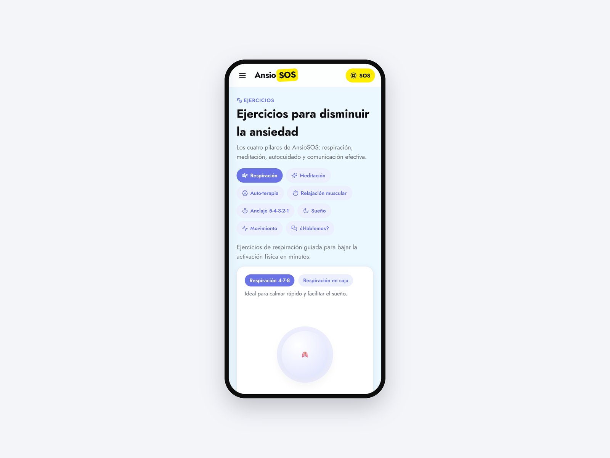
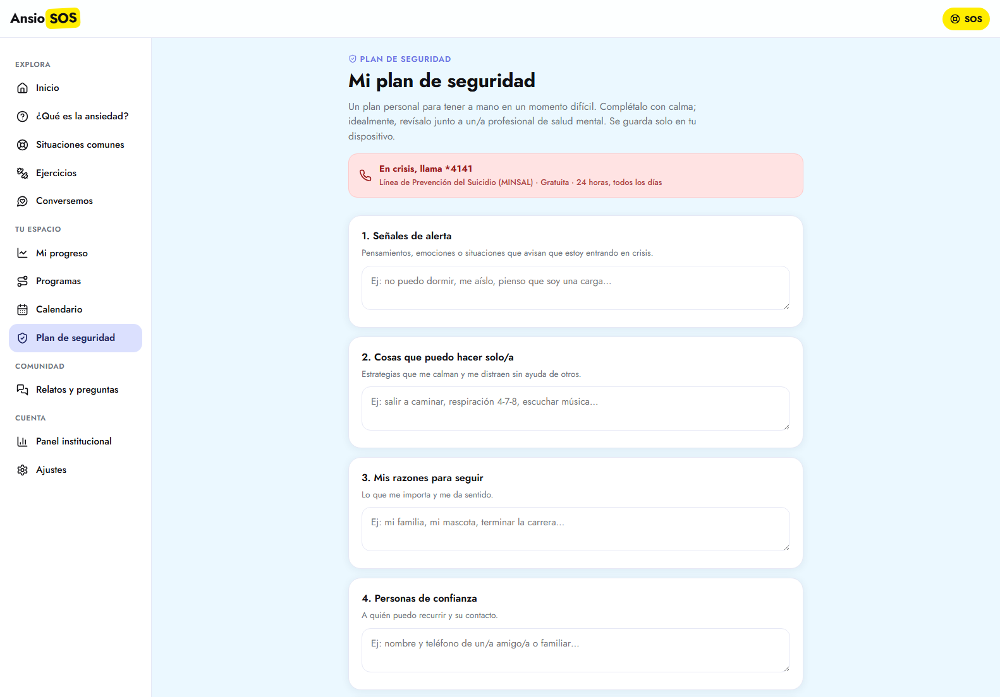
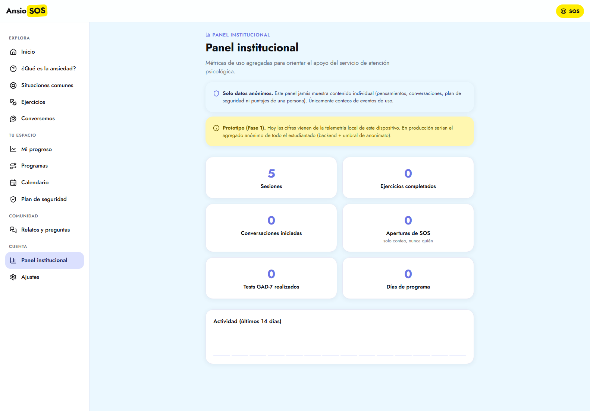

AnsioSOS
La memoria de título de 2021 convertida en una plataforma real para manejar la ansiedad universitaria.

AnsioSOS es una plataforma psicoeducativa para que estudiantes universitarios manejen la ansiedad: contenido, ejercicios y un plan de seguridad personal. Es la reformulación funcional de mi memoria de título de Diseño Industrial (UDP, 2021, aprobada con distinción), que hasta ahora solo existía como prototipo navegable en Adobe XD. Pasó de ser una maqueta a diecisiete componentes y catorce pantallas que de verdad funcionan.
La parte más seria del proyecto no es el código, es el modelo de privacidad. Los datos están clasificados en tres niveles según qué tan sensibles son, con una línea que no se cruza: los pensamientos, el chat y la ideación nunca salen del dispositivo. El principio para el panel institucional es que la institución ve el bosque y nunca los árboles: solo agregados, y solo por sobre un umbral de diez personas. Durante el desarrollo se detectó y corrigió un error ético de diseño: una versión del panel dejaba leer datos individuales.
La decisión de no poner un modelo de lenguaje en el chat también está fundamentada, no es pereza: para este caso de uso la evidencia disponible no muestra diferencia práctica frente a un sistema de reglas, y un modelo agrega riesgo clínico y de privacidad que no compensa. El contenido clínico se filtró con el mismo criterio: respiración diafragmática sí, algunas técnicas populares no, y un suplemento descartado por hepatotóxico.
Bitácora
- 2026-07-29Deja de estar escondidaSe desactiva la protección de despliegue del hosting, que tenía la dirección buena detrás de un login y dejaba como única URL funcional un nombre autogenerado, impresentable para enlazar una memoria de título. Un interruptor tuvo escondido dos meses el proyecto con mejor historia del conjunto.
- 2026-07-20Protección de claves antes de necesitarlasSe cierra el .gitignore para archivos de entorno. Hoy el proyecto no tiene secretos, pero la fase con backend va a necesitarlos y el primero se habría commiteado en silencio.
- 2026-07-02El bug éticoSe detecta que el panel institucional permitía leer datos individuales. Se corrige y se fija el umbral de diez personas para cualquier dato agregado.
- 2026-07-02La taxonomía de datosSe clasifica todo el contenido en tres niveles de sensibilidad y se fija la regla innegociable: pensamientos, chat e ideación no salen del dispositivo.
- 2026-07-02De prototipo a plataformaLa memoria de título de 2021 deja de ser una maqueta: 70 archivos, 17 componentes, 14 pantallas funcionando.
Pantallas


